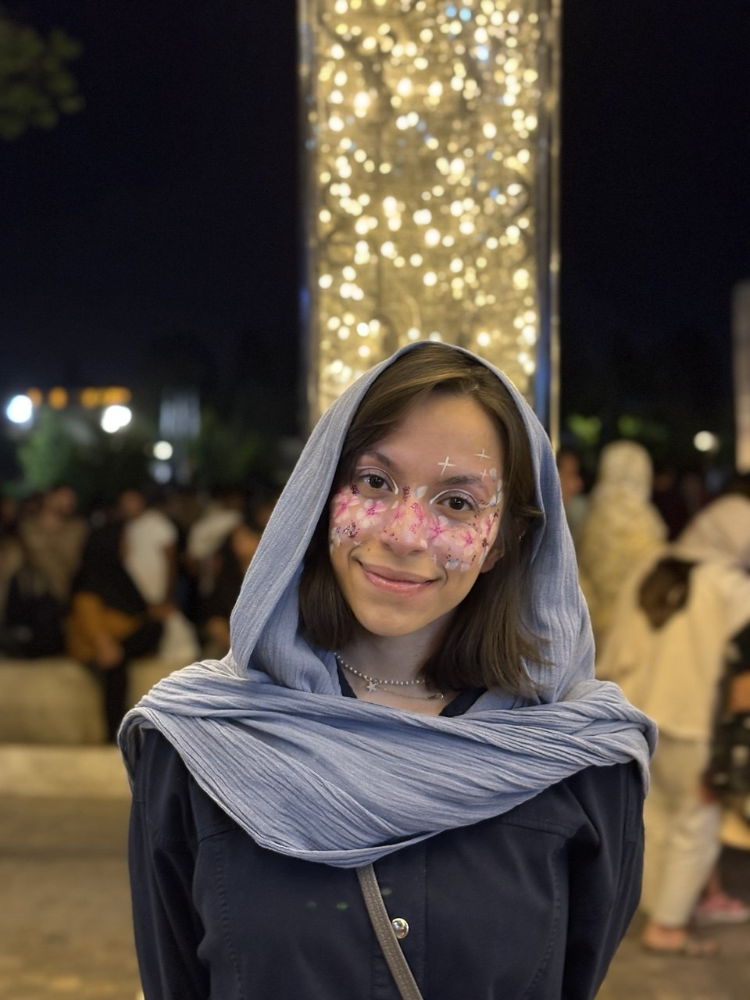
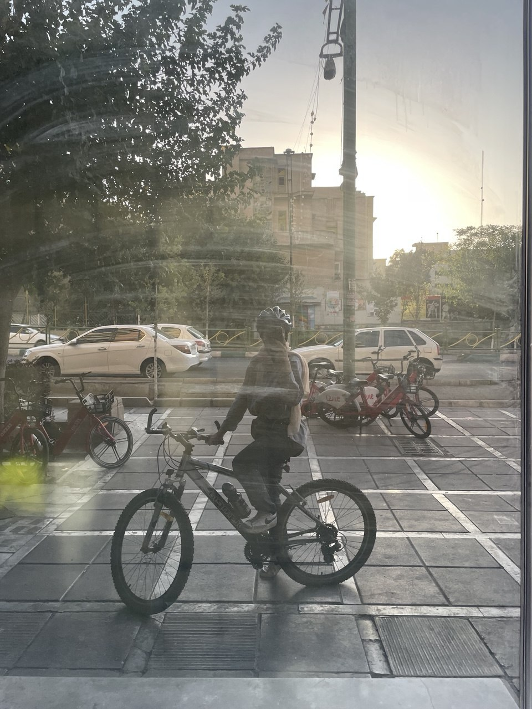
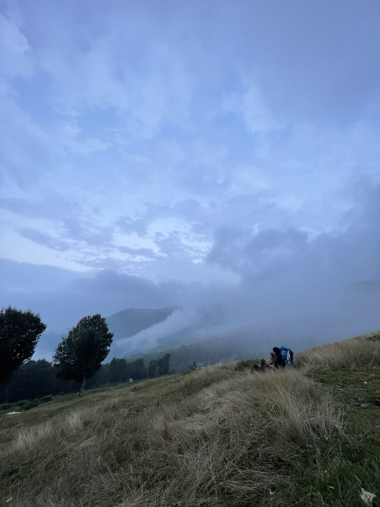
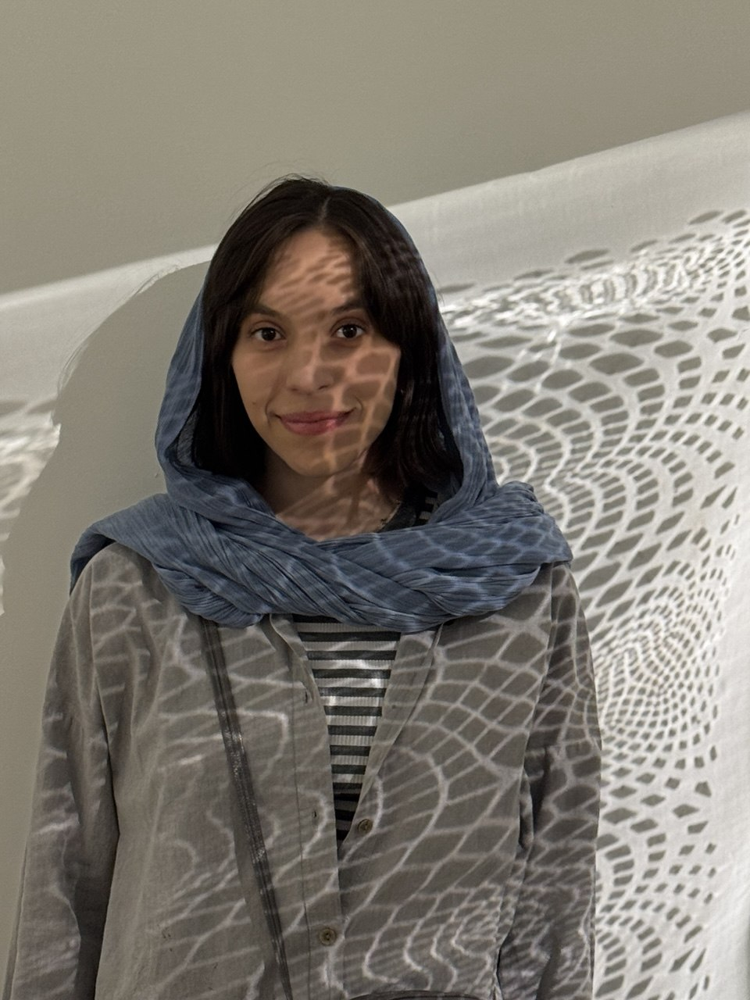
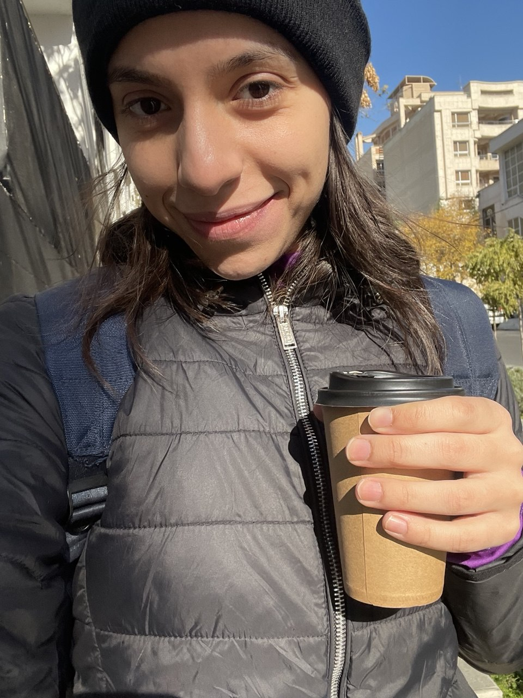

PRODUCT MANAGEMENT
From “what if?”
to something real.
- Discovery & scoping
- User stories & product flows
- Sprint planning & prioritization
- Cross-functional delivery
- Usability testing & QA
● CURRENTLY: BUILDING FINTECH PRODUCTS
I’m Zeinab — a Product Manager who likes turning messy ideas into useful products, then leaving the laptop to find a road, a mountain, or a good cup of coffee.
Product management · fintech · discovery · delivery
A LITTLE ABOUT ME
I’m a Product Manager focused on fintech. I genuinely enjoy the work: figuring out what matters, shaping ideas into features, working with design and engineering, and getting things shipped.
Outside work, I’m usually on a bike, somewhere in nature, planning a climb, or looking for coffee. I like doing things with people, so if you’re building something interesting or planning a Friday ride, say hi.
01 / THE WORK MAP
PRODUCT MANAGEMENT
FINTECH
Working across product, business, design, engineering and stakeholders to turn complex financial workflows into usable experiences.

02 / OUT OF OFFICE

Friday rides are my favorite. I’d rather ride with people than ride alone.
join a ride →
Mountains, trails, climbing and anywhere the view makes the walk worth it.
plan something →If we meet and I’m not holding a cup, something has probably gone wrong.
coffee?03 / FIELD NOTES
Small moments from the route. No particular order.


04 / SAY HI
I’m always happy to meet people working on interesting products, exchange ideas, grab a coffee, or find a good route for Friday.